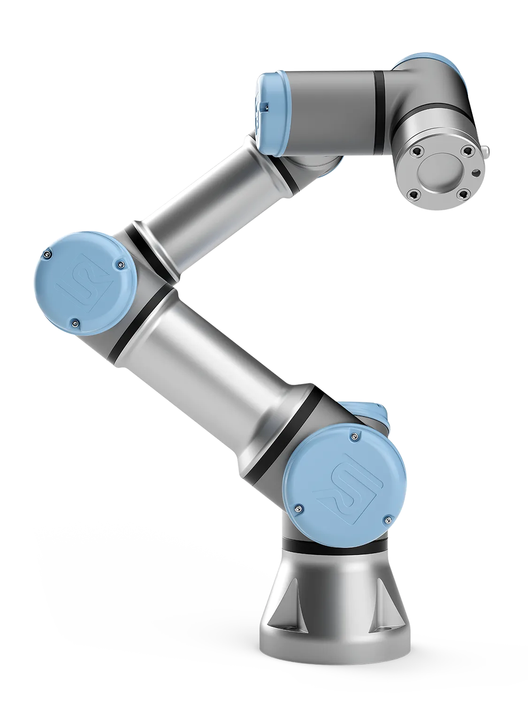
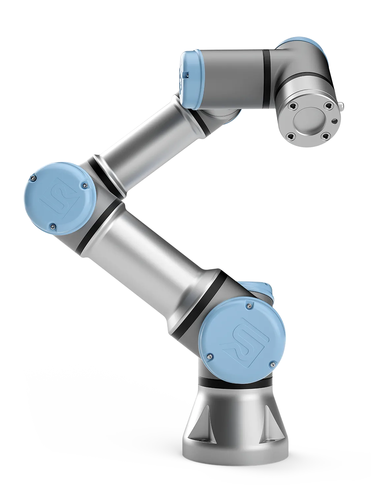

Projects
Control Algorithms for Vision-Based Navigation. Advisor: Sayan Mitra
• Conducted two key drone experiments: (1) Drone tracking—an Ego drone followed a Target drone using a controller with trajectory tracking and YOLO-8-based perception for dynamic adaptation. (2) Gate navigation—compared PID and MPC controllers for optimal race performance, using both ground truth and relative gate positions.
• Developed a predictive drone navigation algorithm using Model Predictive Control (MPC), optimizing flight paths and reducing trajectory deviation by 25% over PID controllers. Implemented in the CasADi framework with IPOPT solver for real-time drone racing scenarios.
• Integrated Microsoft AirSim for high-fidelity testing of navigation algorithms and efficient dynamic pose estimation. Utilized "AirSim Drone Racing Lab" (Madaan et al. 2020) as base environment for gate racing.


Speculative Out-of-Order RISC-V Processor
• Designing and verifying ERR out-of-order processor, implementing RV32IM ISA with FP and Mult extensions.
• Developed arbiter for Icache and Dcache, stride prefetchers, and cacheline adapter for efficient two stage cache-DRAM integration.
• Optimizing design with early branch recovery, Perceptron branch predictor with BTB, and split load-store queue.
• Below is a VERY high level overview of the system.
YuLatin: Latin Quote LLM
• Developed YuLatin LLM, an AI-powered model that analyzes emotions from user input and generates relevant Latin quotes based on detected sentiment.
• Utilized Hugging Face's roberta-base-go_emotions as a base model to classify emotions from user input, ensuring accurate sentiment detection, and match to Latin Quote.
• Developed a full-stack application using Node.js (Express.js) for the backend and Railway for secure and scalable deployment.

Multi-Cycle RISC-V Processor
• Designed multi-cycle processor using the RISC-V instruction set and standard CPU data path using Verilog and Verdi.
• Implemented register-immediate instructions, load and store memory instructions, conditional branch operations.
• Developed test bench to run sequence of instructions, and to run RISC-V assembly. Verified design using RVFI monitor and SPIKE
System Verilog Projects on DE10-Lite FPGA board
• Designed and built digital systems with TTL and FPGAs. Debugged on Model Sim and Signal Tap Logic Analyzer.
• Replicated classical Tetris with NIOS II and SOC, using 32-bit modified Harvard RISC-V architecture. The game was outputted on monitor via VGA output. Utilized Electronic Design Automation to synthesize logic.
• Developed three-stage (fetch, decode, execute) SLC3 processor for LC3 ISA (ADD, NOT, BR, STR, LDR). Created CPU, SRAM, IR of processor on breadboard. A software implementation done on Quartus Prime with System Verilog.

Single Core Unix x86 Kernel
• Implemented device drivers for keyboard, RTC, Terminal, TUX controller, Process Control Blocks in x86 Assembly.
• Introduced compatibility for Linux commands shell (<10 concurrent), ls, cat, and grep on Posix style shell with keyboard comparability.
• Designed paging-based virtual memory, context switching, read only filesystem, round-robin scheduler.
Convolution Neural Network for Image Classification
• Optimizing forward-pass of convolution layers using NVIDIA Cuda Platform. Developed software for processors with massively parallel computing resources.
• Evaluated performance with Nsight systems/computer profiling tools to refine CUDA kernel for optimal execution. Implementing modified LeNet5 architecture for working with Fashion MNIST dataset
• First, used the unroll and shared-memory matrix multiply method to optimize the kernel. Then, tried to conduct kernel fusion for unrolling and multiply to speed up more. Third, sweep CUDA parameters to find best values. Finally, realize different implementation in kernels with different layer sizes.
UR3 Robotic Knight's Tour
• Implemented an Open Knight's Tour on a physical board using a modified Hamiltonian Path Algorithm with a heuristic prioritizing moves with the fewest remaining options, optimizing for linear time complexity.
• Integrated UR3 robot control with inverse kinematics, manually mapped XYZ positions for precise movement, and used blob detection with a suction mechanism to identify and manipulate the knight.
• Utilized ROS and ROS Bags for real-time execution, synchronized motion control, and data logging, ensuring accurate tracking and debugging of robotic operations
 

Nonlinear Underactuated System
• Utilized two optical encoders to measure required angles to calculate swing velocity and saturation of the Reaction Wheel Pendulum. Developed 6 controllers to stabilize and implement all components of the final robotic arm.
• Simulated a three-state feedback controller to stabilize the velocity of rotor on MATLAB Simulink, used error control to instantiate controller onto RWP. Design process included system identification, model validation, and design validation.
Superheterodyne AM Receiver
• Built receiver on breadboard with RF/IF amplifier, Mixer, Demodulator, local oscillator, and audio amplifier elements.
• Designed digital filter to demodulate AM signal, replace IF signal with soundcard-based sampler receiver, and play audio on speakers for software radio. Measured AM receiver performance, sensitivity to noise, and image rejection.
Open Flights Airplane Path Optimization
• Developed a program to find the shortest path between airports using the OpenFlights dataset
• Created a weighted directed graph using adjacency lists, with distances between vertices calculated from routes.dat
• Implemented both Floyd-Warshall and A* algorithms to efficiently find shortest paths
• Performed data cleaning and graph construction using DFS to validate path existence between airports